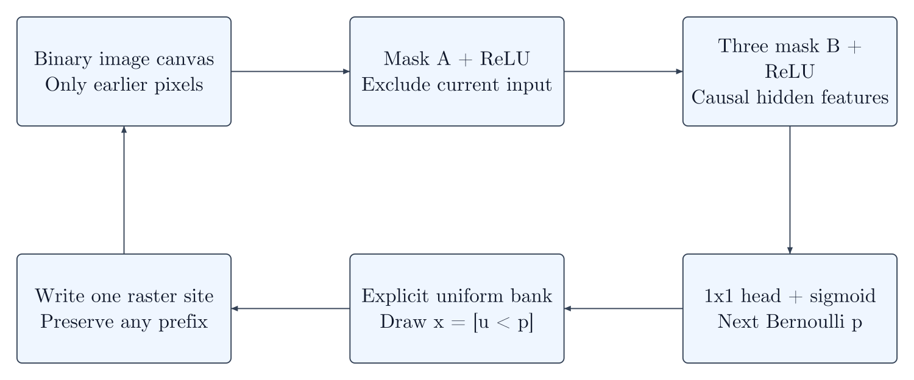
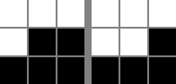
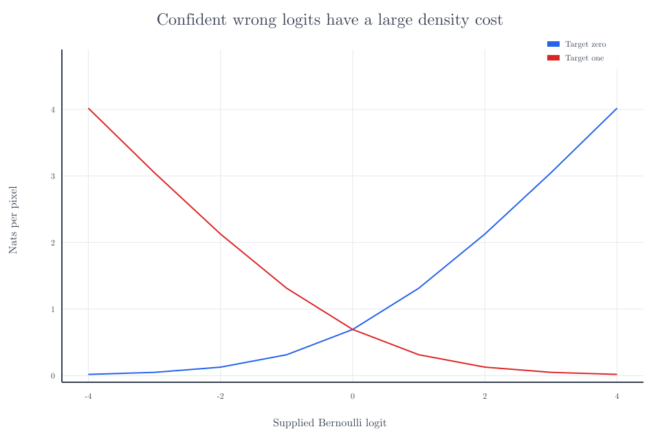
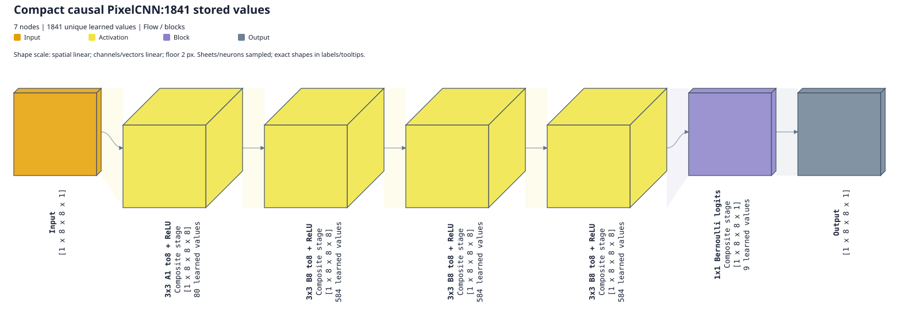
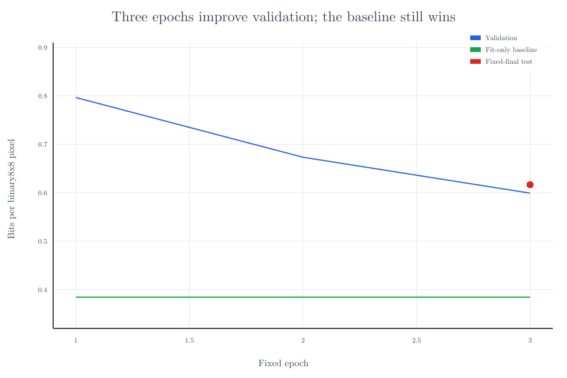
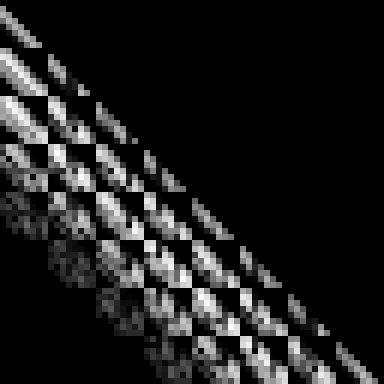
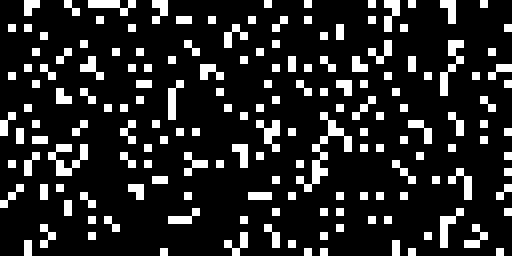
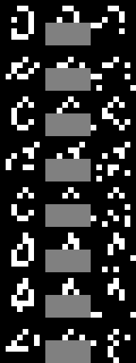

PixelCNN: A Causal Binary Image Density
Abstract
An image density can predict each pixel from the pixels before it in raster order. A masked convolution enforces this restriction structurally: its current and future input derivatives vanish exactly. This compact native C++ PixelCNN uses four width-eight ReLU layers,1841 stored values and a Bernoulli head on binary8x8 MNIST images. Worked masks and likelihoods precede the real data. The complete program exposes all96 Adam updates, all64 sampling steps, the full logit/input Jacobian and prefix completion. Its fixed three-epoch test result is.6165 bits per binary pixel, worse than the fit-only independent Bernoulli baseline's.3844. Seeded samples illustrate the density protocol; they do not establish realistic generation or superior likelihood.
Factor the image into causal Bernoulli predictions
[van den Oord, Kalchbrenner and Kavukcuoglu, Pixel Recurrent Neural Networks (2016)](https://arxiv.org/abs/1601.06759) introduced image densities with explicit pixel dependencies, including masked convolutional networks. This teaching variant is a small binary PixelCNN: one gray channel, four biased3x3 SAME stride-one convolutions of width8, ReLU after each, and a biased1x1 output. It has no normalization, pooling, dropout, class conditioning or batch coupling.
For a binary8x8 image x, number the64 sites left-to-right, top-to-bottom. The model predicts p_j=sigmoid(z_j(x_<j)) and assigns
During fitting, all true preceding pixels are supplied together: teacher forcing computes the64 conditionals in one network pass. During generation, each new binary draw becomes input to the following pass. The restriction must hold in the network, rather than relying on unknown pixels being filled with zeros.
#include <dm/dm.hpp>
int main(){
std::filesystem::create_directories("build");
dm::graphics::Diagram d(42,1500);dm::graphics::DiagramNodeStyle s;
s.width=9;s.height=4.6;s.font_size=35;
d.node("x",{-14,5},"Binary image canvas\nOnly earlier pixels",s)
.node("a",{0,5},"Mask A + ReLU\nExclude current input",s)
.node("b",{14,5},"Three mask B + ReLU\nCausal hidden features",s)
.node("p",{14,-5},"1x1 head + sigmoid\nNext Bernoulli p",s)
.node("u",{0,-5},"Explicit uniform bank\nDraw x = [u < p]",s)
.node("loop",{-14,-5},"Write one raster site\nPreserve any prefix",s)
.edge("x","a").edge("a","b").edge("b","p")
.edge("p","u").edge("u","loop").edge("loop","x")
.save_svg("build/pc_method.svg");
}
Hand-check masks A and B before any fitting
A3x3 kernel reads its top row and its middle-left cell. Mask A excludes the center, so the raw current pixel cannot enter its own prediction. Mask B also allows the center hidden feature, which already depends only on past raw pixels. Multiplying W by the mask inside the graph leaves forbidden stored coordinates present but gives them exact zero partials.
For a single input and eight output channels, A contains32 ones and40 zeros. Each8→8 mask B contains320 ones and256 zeros. Three B layers therefore leave 40+3*256=808 masked kernel coordinates. Including all biases and the1x1 head there are1841 stored,1033 active values in10 leaves. Allowing a raw center pixel would leak its target; setting unknown pixels to zero during generation would not repair that training density.
#include <dm/dm.hpp>
int main(){
namespace n=dm::nn;namespace m=n::models;
auto a=m::CausalPixelMask(1,1,false),b=m::CausalPixelMask(1,1,true);
auto panel_a=n::image_grid(n::reshape(a,{9,1,1,1}),3,3,.5,45);
auto panel_b=n::image_grid(n::reshape(b,{9,1,1,1}),3,3,.5,45);
n::save_image_grid(n::stack({panel_a,panel_b}),"build/pc_masks.png",2,0,1,12,.5,1);
std::print("Mask A: {}\nMask B: {}\n",n::reshape(a,{3,3}).values_str(),n::reshape(b,{3,3}).values_str());
}Mask A: [[1, 1, 1], [1, 0, 0], [0, 0, 0]] Mask B: [[1, 1, 1], [1, 1, 0], [0, 0, 0]]

Derive the teacher-forced loss and its partial
Stable Bernoulli negative log likelihood is
At z=0, p=.5 and either binary target costs log(2) nats, or one bit. For a single image, the per-image NLL sums64 terms; the scalar training loss averages all pixels and rows. Divide nats by log(2) to obtain bits per *binary8x8 pixel*. These are not bits per original28x28 gray pixel. A sigmoid alone cannot ensure causality: the masked feature paths must exclude the target.
#include <dm/dm.hpp>
int main(){
namespace n=dm::nn;auto t=n::DType::Float64;
auto z=n::reshape(n::arange(-4,5,1,t),{1,1,9,1}).requires_grad_();
auto zero=n::models::BernoulliPixels(z,n::zeros(z.shape(),t));
auto one=n::models::BernoulliPixels(z,n::ones(z.shape(),t));
auto partial=n::grad(one.loss,{z})[0];
auto plot=dm::graphics::RPlot::create();
plot.lines(z.to_vector<double>(),zero.pixel_nll.to_vector<double>(),"Target zero",{37,99,235})
.lines(z.to_vector<double>(),one.pixel_nll.to_vector<double>(),"Target one",{220,38,38})
.y_limits(-.1,4.9).x_label("Supplied Bernoulli logit").y_label("Nats per pixel")
.title("Confident wrong logits have a large density cost").save_svg("build/pc_loss_toy.svg");
std::print("At z=0: target-one NLL={}; mean-loss partial={} (nine pixels).\n",one.pixel_nll.to_vector<double>()[4],partial.to_vector<double>()[4]);
}At z=0: target-one NLL=0.6931471805599453; mean-loss partial=-0.05555555555555555 (nine pixels).

Inspect the executed native network
The public API returns the actual preactivation, four ReLU maps and logits. The diagram traces those boundaries from a real execution; it is not a separate architectural sketch. Widths remain8 throughout the hidden stack. Four3x3 layers give a nominal9x9 field, with boundary padding and the ordinary masked CNN blind spot: some earlier pixels remain unreachable through this stack. The later Jacobian explicitly checks one such dependency, input28 for logit34.
#include <dm/dm.hpp>
int main(){
namespace n=dm::nn;n::ParameterStore p(8401);
n::Module model([&](const n::Tensor& x){
auto o=n::models::PixelCnn(p,x);
n::model_stage("3x3 A1 to8 + ReLU",x,o.head);
n::model_stage("3x3 B8 to8 + ReLU",o.head,o.hidden0);
n::model_stage("3x3 B8 to8 + ReLU",o.hidden0,o.hidden1);
n::model_stage("3x3 B8 to8 + ReLU",o.hidden1,o.hidden);
return n::model_stage("1x1 Bernoulli logits",o.hidden,o.logits);
},"Compact causal PixelCNN:1841 stored values");
n::ModelPlotOptions options;options.detail=n::ModelPlotDetail::Blocks;
options.sizing.minimum_extent=2;options.sizing.max_planes=4;
auto fig=model.plot(n::zeros({1,8,8,1}),options);
if(fig.parameter_count()!=1841 || p.size()!=10)throw std::runtime_error("Parameter census");
fig.save_svg("build/pc_network.svg");
}
Run the original real-data experiment with visible state transitions
The canonical native MNIST preparation supplies disjoint balanced pools of 1000 fit,200 validation and200 official-test rows, with source IDs and a provenance manifest. BinaryPixels uses half-pixel bilinear28→8 arithmetic in Double, casts once to Float32, then thresholds gray>=.5. Fitting uses only the 1000 binary training images. No held-out row selects a checkpoint: the source protocol fixes epoch3.
The initial source has no recorded TensorFlow initialization available, so its auto default uses the native seed8401. This report preserves that selection, BatchOrder seed8419, batch size32 and three epochs:31 full batches and one 8-row batch each epoch,96 Adam(.003) writes total. Adam uses default betas (.9,.999),epsilon1e−8, no weight decay. All10 leaves remain stored, including the808 forbidden kernel coordinates. The program saves every partial/write and checks those coordinates after every step.
The sampler below is deliberately visible. BinaryPixelUniforms draws an entire Double[N,64] raw-MT19937 midpoint bank in sample-row/ordinal order. For each raster site, it evaluates the current canvas, retains that conditional and writes [u<p]. A completion copies only the first32 known sites; the remaining truth is never model input. It still draws the full64-column bank, and saved prefix conditionals remain zero. Gray unknowns in the displayed completion panel are a rendering convention, not fitted or sampled values.
#include <dm/dm.hpp>
namespace n=dm::nn;namespace m=n::models;
using T=n::Tensor;using A=std::map<std::string,T>;namespace fs=std::filesystem;
void Save(const fs::path& file,const A& fields){
n::NamedTensors named;for(const auto& [key,value]:fields)named.emplace_back(key,value);
n::save_npz(file.string(),named);
}
A Weights(const n::ParameterStore& p){
A out;for(const auto& name:p.names())out.emplace(name,p.at(name).detach().clone());return out;
}
bool Equal(const A& a,const A& b){
if(a.size()!=b.size())return false;
for(const auto& [key,value]:a)if(!b.count(key)||!n::equal_bits(value,b.at(key)))return false;
return true;
}
A Partials(const n::ParameterStore& p,const std::vector<T>& g){
A out;for(std::size_t k=0;k<g.size();++k)out.emplace(p.names()[k],g[k].detach());return out;
}
A Evaluate(n::ParameterStore& p,const T& x){
n::NoGradGuard guard;auto o=m::PixelCnn(p,x);auto l=m::BernoulliPixels(o.logits,x);
return {{"logits",o.logits},{"hidden",o.hidden},{"input_features",o.input_features},
{"probability",l.probability},{"per_image_nll",l.per_image_nll},{"loss",l.loss}};
}
A Sample(n::ParameterStore& p,int count,std::uint32_t seed,const T& prefix={},int prefix_size=0){
n::NoGradGuard guard;
auto ordinal=n::reshape(n::arange(0,64),{1,64});
T canvas=n::zeros({count,64}),conditionals=n::zeros({count,64});
const auto bank=m::BinaryPixelUniforms(count,seed);
if(prefix_size)canvas=n::where(n::less(ordinal,prefix_size),n::reshape(prefix,{count,64}),canvas);
for(int site=prefix_size;site<64;++site){
auto logits=m::PixelCnn(p,n::reshape(canvas,{count,8,8,1})).logits;
auto q=n::slice_axis(n::reshape(n::sigmoid(logits),{count,64}),1,site,site+1);
auto u=n::slice_axis(bank,1,site,site+1);
auto bit=n::cast(n::less(u,n::cast(q,n::DType::Float64)),n::DType::Float32);
auto at_site=n::equal(ordinal,site);
conditionals=n::where(at_site,q,conditionals);
canvas=n::where(at_site,bit,canvas);
}
return {{"images",n::reshape(canvas,{count,8,8,1})},{"uniform",bank},{"conditionals",conditionals}};
}
int main(){
const fs::path root="build/pixel_cnn";fs::create_directories(root/"phases");
n::set_num_threads(4);
const fs::path data_root=dm::datasets::prepare_example_data("mnist-assets");
const auto pools=m::LoadSaliency(data_root/"saliency");
std::vector<T> binary;A data;
const std::vector<std::string> split{"fit","validation","test"};
for(int k=0;k<3;++k){
auto prep=m::BinaryPixels(pools[k].images);binary.push_back(prep.images);
data[split[k]+"_original"]=pools[k].images;data[split[k]+"_gray"]=prep.gray;
data[split[k]+"_images"]=prep.images;data[split[k]+"_labels"]=pools[k].labels;
data[split[k]+"_source_ids"]=pools[k].source;
}
Save(root/"data.npz",data);
n::ParameterStore p(8401);
{n::NoGradGuard guard;m::PixelCnn(p,n::zeros({1,8,8,1}));}
const auto initial=Weights(p);Save(root/"initial_arrays.npz",initial);
Save(root/"initial_outputs.npz",Evaluate(p,binary[2]));
n::OptimizerConfig config;config.kind=n::OptimizerKind::Adam;
n::Optimizer optimizer(p,.003,config);
n::BatchOrder order(1000,32,8419);std::vector<std::int64_t> rows;
std::ofstream batches(root/"batches.tsv"),history(root/"history.tsv");history.precision(17);
batches<<"epoch\tstep\trow\tsource_id\n";
history<<"epoch\tvalidation_nll_per_binary_pixel\tvalidation_bits_per_binary_pixel\n";
auto source=pools[0].source.to_vector<std::int32_t>();
std::vector<double> val_bits;T first;int updates=0;
for(int epoch=1;epoch<=3;++epoch){
order.begin_epoch();
for(;;){
rows=order.next();if(rows.empty())break;
const auto x=n::take_rows(binary[0],rows);
if(!updates){first=x;Save(root/"first_batch.npz",{{"images",x}});
Save(root/"first_forward.npz",Evaluate(p,x));}
auto output=m::PixelCnn(p,x);auto objective=m::BernoulliPixels(output.logits,x);
auto gradients=n::grad(objective.loss,p.parameters());
const auto phase=root/"phases"/("batch"+std::to_string(updates));
Save(phase.string()+"-gradient.npz",Partials(p,gradients));
if(!updates)Save(root/"initial_gradients.npz",Partials(p,gradients));
optimizer.step(gradients);
const auto after=Weights(p);Save(phase.string()+"-after.npz",after);
Save(phase.string()+"-iterations.npz",{{"iterations",n::from_vector(std::vector<std::int64_t>{optimizer.iterations()},{1})}});
if(!updates)Save(root/"first_after.npz",after);
for(const auto& [key,value]:initial){
if(!key.ends_with("/W")||key=="output/W")continue;
auto mask=m::CausalPixelMask(key=="input/W"?1:8,8,key!="input/W");
auto forbidden=n::equal(mask,0);
if(!n::equal_bits(n::where(forbidden,value,n::zeros_like(value)),
n::where(forbidden,after.at(key),n::zeros_like(value))) ||
n::max(n::abs(n::where(forbidden,Partials(p,gradients).at(key),n::zeros_like(value)))).item()!=0)
throw std::runtime_error("Masked coordinates changed");
}
for(auto row:rows)batches<<epoch<<'\t'<<updates<<'\t'<<row<<'\t'<<source[row]<<'\n';
++updates;
}
const double nll=Evaluate(p,binary[1]).at("loss").item();
history<<epoch<<'\t'<<nll<<'\t'<<nll/std::log(2.)<<'\n';val_bits.push_back(nll/std::log(2.));
Save(root/("epoch"+std::to_string(epoch)+"_arrays.npz"),Weights(p));
Save(root/("epoch"+std::to_string(epoch)+"_samples.npz"),Sample(p,16,8423));
}
if(updates!=96 || optimizer.iterations()!=96)throw std::runtime_error("96 Adam updates");
p.save((root/"final.npz").string());
Save(root/"final_gradients.npz",Partials(p,n::grad(m::BernoulliPixels(m::PixelCnn(p,first).logits,first).loss,p.parameters())));
n::ParameterStore restored(8401);
{n::NoGradGuard guard;m::PixelCnn(restored,n::zeros({1,8,8,1}));}
restored.load((root/"final.npz").string(),true);
if(!Equal(Weights(p),Weights(restored)))throw std::runtime_error("Fresh restore");
const auto before=Weights(restored),out=Evaluate(restored,binary[2]);
Save(root/"model_arrays.npz",before);Save(root/"outputs.npz",out);
auto single=n::take_rows(binary[2],{0});
auto probability=Evaluate(restored,single).at("probability");
if(n::max(n::abs(probability-n::take_rows(out.at("probability"),{0}))).item()>1e-6)
throw std::runtime_error("Batch independence");
A causal{{"images",single},{"probability",probability}};std::vector<T> jacobian;
auto ordinal=n::reshape(n::arange(0,64),{1,8,8,1});
for(int site=0;site<64;++site){
auto input=single.detach().clone().requires_grad_();
auto logits=n::reshape(m::PixelCnn(restored,input).logits,{1,64});
auto gradient=n::reshape(n::grad(n::sum(n::slice_axis(logits,1,site,site+1)),{input})[0],{64});
if(n::max(n::abs(n::slice_axis(gradient,0,site,64))).item()!=0)
throw std::runtime_error("Current/future derivative");
auto changed=n::where(n::greater_equal(ordinal,site),1-single,single);
auto cp=Evaluate(restored,changed).at("probability");
if(!n::equal_bits(n::slice_axis(n::reshape(cp,{64}),0,0,site+1),
n::slice_axis(n::reshape(probability,{64}),0,0,site+1)))
throw std::runtime_error("Future-flip prefix invariant");
if(site%8==0){causal["changed_input"+std::to_string(site)]=changed;
causal["changed_probability"+std::to_string(site)]=cp;}
jacobian.push_back(gradient.detach());
}
causal["jacobian"]=n::stack(jacobian);Save(root/"causality.npz",causal);
if(causal.at("jacobian").to_vector<float>()[34*64+28]!=0)throw std::runtime_error("Standard blind spot");
auto samples=Sample(restored,32,8423);Save(root/"samples.npz",samples);
if(!Equal(samples,Sample(restored,32,8423)))throw std::runtime_error("Repeated sample bank/conditionals");
auto truth=n::take_rows(binary[2],{0,1,2,3,4,5,6,7});
auto completion=Sample(restored,8,8443,truth,32);completion["truth"]=truth;
Save(root/"completions.npz",completion);
if(!n::equal_bits(n::slice_axis(n::reshape(truth,{8,64}),1,0,32),
n::slice_axis(n::reshape(completion.at("images"),{8,64}),1,0,32)))
throw std::runtime_error("Observed prefix preservation");
auto observed=n::where(n::less(ordinal,32),truth,n::full(truth.shape(),.5));
auto gallery=n::reshape(n::stack({truth,observed,completion.at("images")},1),{24,8,8,1});
Save(root/"completion_gallery.npz",{{"images",gallery}});
n::save_image_grid(n::tile(samples.at("images"),{1,1,1,3}),(root/"samples.png").string(),8,0,1,0,220/255.,8);
n::save_image_grid(n::tile(gallery,{1,1,1,3}),(root/"completions.png").string(),3,0,1,0,220/255.,8);
if(!Equal(before,Weights(restored)))throw std::runtime_error("Inference wrote parameters");
{n::NoGradGuard guard;
auto posterior=(n::sum(n::cast(binary[0],n::DType::Float64),{0})+.5)/1001.;
auto target=n::cast(binary[2],n::DType::Float64);
auto baseline=-n::mean(target*n::log(posterior)+(1-target)*n::log1p(-posterior));
Save(root/"baseline.npz",{{"probability",n::reshape(n::cast(posterior,n::DType::Float32),{64})}});
Save(root/"summary.npz",{{"validation_bits",n::from_vector(val_bits,{3})},
{"test_bits",n::cast(out.at("loss"),n::DType::Float64)/std::log(2.)},
{"baseline_bits",baseline/std::log(2.)}});
std::print("| Fixed protocol | Value |\n|---|---:|\n| Fit / validation / test |1000 /200 /200|\n| Stored / active / masked values |1841 /1033 /808|\n| Epochs / Adam updates |3 /96|\n| Full causal Jacobian entries checked |4096|\n| Test bits per binary pixel |{:.6f}|\n| Fit-only Bernoulli baseline |{:.6f}|\n",out.at("loss").item()/std::log(2.),baseline.item()/std::log(2.));
}
}| Fixed protocol | Value |
|---|---|
| Fit / validation / test | 1000 /200 /200 |
| Stored / active / masked values | 1841 /1033 /808 |
| Epochs / Adam updates | 3 /96 |
| Full causal Jacobian entries checked | 4096 |
| Test bits per binary pixel | 0.616536 |
| Fit-only Bernoulli baseline | 0.384447 |
Inspect the actual binary inputs and the fixed learning history
The top row below contains the first eight fit-pool resized gray images; the bottom row contains their exact deterministic thresholds. The stored data archive also retains all original28x28 images, digit labels and source IDs. The fixed small run improves validation likelihood across its three epochs, while its held-out density still loses to the independent baseline. Replacing the source protocol with more epochs would answer a different experimental question.
#include <dm/dm.hpp>
int main(){
namespace n=dm::nn;std::map<std::string,n::Tensor> a;
for(auto& [key,value]:n::load_npz("build/pixel_cnn/data.npz"))a.emplace(key,value);
auto rows=std::vector<std::int64_t>{0,1,2,3,4,5,6,7};
auto grid=n::concat({n::take_rows(a.at("fit_gray"),rows),n::take_rows(a.at("fit_images"),rows)},0);
n::save_image_grid(grid,"build/pc_data.png",8,0,1,1,.5,8);
}
#include <dm/dm.hpp>
int main(){
namespace n=dm::nn;std::map<std::string,n::Tensor> a;
for(auto& [key,value]:n::load_npz("build/pixel_cnn/summary.npz"))a.emplace(key,value);
auto plot=dm::graphics::RPlot::create();
auto baseline=a.at("baseline_bits").item(),test=a.at("test_bits").item();
plot.lines({1,2,3},a.at("validation_bits").to_vector<double>(),"Validation",{37,99,235})
.lines({1,3},{baseline,baseline},"Fit-only baseline",{22,163,74})
.points({3},{test},"Fixed-final test",{220,38,38},6)
.y_limits(.32,.91).x_label("Fixed epoch").y_label("Bits per binary8x8 pixel")
.title("Three epochs improve validation; the baseline still wins").save_svg("build/pc_history.svg");
}
Check every causal derivative and the remaining blind spot
For every logit j, the program differentiates it with respect to all64 input pixels. Every entry k>=j is exactly zero. A separate finite-change guard flips all current/future bits simultaneously and requires every prefix conditional through j to remain bit identical. The latter catches information leakage that a local derivative could miss through an inactive ReLU. A single image also matches its output inside the200-row test batch.
The figure shows the full64x64 absolute Jacobian. Black upper-triangular entries are structurally forbidden. Earlier-site zeros may also arise from padding, limited receptive fields, ReLU gates or the standard masked-convolution blind spot. In particular input28 cannot affect logit34 in this architecture even though28<34. Strict causality alone does not mean all past information is used.
#include <dm/dm.hpp>
int main(){
namespace n=dm::nn;n::Tensor j;
for(auto& [key,value]:n::load_npz("build/pixel_cnn/causality.npz"))if(key=="jacobian")j=n::abs(value);
auto scaled=n::log1p(100*j);scaled=scaled/n::max(scaled);
n::save_image_grid(n::reshape(scaled,{1,64,64,1}),"build/pc_causality.png",1,0,1,0,0,6);
}
Generate from zero and complete a preserved prefix
Every unconditional draw begins from an all-zero canvas. Seed8423 produces32 samples; the three epoch snapshots each reuse that seed with16 rows, separating changes in the fitted density from changes in the random bank. Seed8443 produces eight completions. The observed first32 raster sites are copied exactly; the last32 are sampled autoregressively. The completion truth is shown for comparison and is never supplied after the prefix.
#include <dm/dm.hpp>
int main(){std::filesystem::copy_file("build/pixel_cnn/samples.png","build/pc_samples.png",std::filesystem::copy_options::overwrite_existing);}
#include <dm/dm.hpp>
int main(){std::filesystem::copy_file("build/pixel_cnn/completions.png","build/pc_completions.png",std::filesystem::copy_options::overwrite_existing);}
Interpret a density result with an appropriate baseline
The independent baseline fits each site's Bernoulli parameter only on the1000 training images: q_j=(count_j+.5)/1001. It evaluates test log likelihood with that *unrounded Double posterior*, while its archived probability image is Float32. Using the rounded archive to recompute the scalar would alter the original numerical protocol. Shared blank-border structure makes a site-specific baseline useful here; learning conditional structure does not guarantee beating it in96 updates.
The run restores all10 leaves exactly, repeats seeded images/uniforms/conditionals bit for bit, preserves every completion prefix and leaves fitted parameters unchanged during inference. A separate development oracle checks498099 forward values,180418 analytic partials,28 scalar finite differences and all96 Adam writes against the unchanged original. It independently reproduces5376 sampled pixels across epoch snapshots, final samples and completions. Native and report replacement arrays must match before the old executable is retired.
This experiment tests a compact causal density and its state protocol. It does not measure classification accuracy, natural-image FID, perceptual realism or full-paper PixelCNN performance. The fixed baseline comparison and the retained blind spot are part of the result.